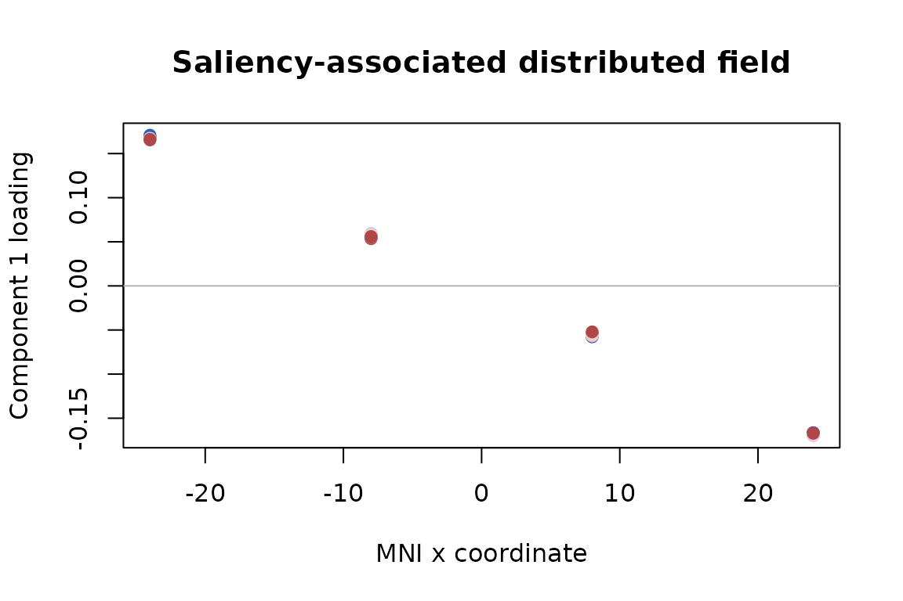

Find Distributed Design Effects in Trialwise Brain Fields
Source:vignettes/design_mfa.Rmd
design_mfa.RmdA trialwise fMRI analysis often leaves you with one beta volume per trial. You may then want to know which distributed activation patterns are associated with saliency, probe type, confidence, or an interaction–without first averaging trials into cells and without letting subjects with more trials dominate the group result.
design_mfa() answers that question term by term. For
each requested design effect it returns a conditional effect size, a
trajectory over an explicit reference design, and one or more
group-level spatial loading fields. The result is a design
decomposition: components maximize fitted variation for a named term,
rather than total variation in the brain fields.
This article follows one complete analysis and then treats missing cells, rank selection, soft spatial correspondence, and uncertainty as extensions.
What goes in, and what comes out?
For each subject s, you supply two matching objects:
-
Y[[s]]: ann_s-by-p_smatrix with trials in rows and brain features in columns; -
design[[s]]: a data frame withn_srows and the trial annotations used in an ordinary R formula.
The common-grid case uses the same uniquely named features for every subject. The soft-alignment case, introduced later, allows subject-specific features linked by sparse spatial maps.
The calculation has a simple sequence:
trial annotations + trialwise fields
|
v
full and reduced design fits for one named term
|
v
effect matrix on a population reference grid
|
v
design trajectory x spatial loading fieldSubject intercepts are included in both the full and reduced fits. By default, each subject contributes equal total weight even when trial counts differ. Trials remain the modeling rows, while subjects remain the population units for held-out validation and resampling.
Despite the API name, this is an ASCA+/partial-RDA-style design decomposition. It does not perform the block normalization that defines multiple factor analysis (MFA).
What does the example look like?
The example has five ordered saliency levels, three probe types, four ordered confidence ratings, and two runs. Saliency and probe are experimentally controlled. Confidence is observed, so its result will be interpreted as a conditional association rather than a causal effect.
input_overview
#> subject trials features
#> 1 S1 120 64
#> 2 S2 135 64
#> 3 S3 150 64
#> 4 S4 165 64
#> 5 S5 180 64
#> 6 S6 195 64Every subject has the same 64 MNI features, but the trial totals range from 120 to 195. Saliency by probe is balanced within subject; adding confidence produces cell counts from 1 to 7. This is the imbalance handled by the trial-level model rather than by filling or averaging cells.
How do you fit the common case?
Start with one model you can interpret. Here saliency and probe may interact, confidence enters additively, and run is a nuisance variable.
fit <- design_mfa(
beta_volumes,
trial_design,
~ saliency * probe + confidence,
nuisance = ~ run,
contrasts = list(saliency = "poly", probe = "sum", confidence = "poly"),
terms = c("saliency", "probe", "saliency:probe", "confidence"),
rank = 2
)
fit
#> Design effect decomposition (ASCA+/partial RDA)
#> Subjects: 6
#> Trials: 945 total (120, 135, 150, 165, 180, 195)
#> Features: 64
#> Design rank: 24 / 24
#> Weighting: equal_subject
#> Alignment: shared
#> Computation: subject_streamed_sufficient
#> Subject model: fixed_intercept
#> Effects: 4 estimable of 4We fix the displayed fit at rank two so that the component output is concise; the held-out procedure below shows how rank should be selected for an actual analysis.
Ordered factors use planned polynomial contrasts, while probe uses
sum contrasts. The default partial hypothesis is hierarchical: asking
for the saliency effect compares the full model with a reduced model
that removes saliency and its descendant saliency-by-probe interaction.
This hypothesis is invariant to full-rank recoding of the factors. Use
term_scope = "assigned" only when a coding-dependent
assigned-column hypothesis is specifically intended.
What exactly is being decomposed?
For a requested term h, design_mfa()
compares the full model with the appropriate reduced model, evaluates
the estimable term contribution on a reference grid, and centers that
effect using the grid weights. Call the resulting grid-by-feature matrix
H_h. Its thin decomposition is
H_h = U_h D_h V_h^TThe columns of U_h D_h are design scores: they show how
the fitted spatial pattern changes across reference conditions. The
columns of V_h are the paired group spatial loadings. Each
term gets its own basis, so a saliency map is not forced to share a
spatial component with probe or confidence.
The default reference grid gives scientifically defined factor cells equal weight. It is not silently reweighted by the observed confidence frequencies. In an unbalanced design, partial sums of squares for different terms need not add to a single total.
Which effects are safe to interpret?
Always inspect estimability before looking at maps.
estimability(fit)[, c(
"term", "status", "estimable_df", "partial_r2", "component_rank"
)]
#> term status estimable_df partial_r2 component_rank
#> 1 saliency estimable 12 0.87080037 2
#> 2 probe estimable 10 0.13291370 2
#> 3 saliency:probe estimable 8 0.06712882 2
#> 4 confidence estimable 3 0.23360189 2partial_r2 describes the conditional improvement for
that full-versus- reduced comparison; it is not a slice of an additive
variance pie. component_rank is the number of retained
directions used to summarize the fitted term effect.
How do you read an effect component?
Start with the component table, then examine the paired trajectory and spatial field.
saliency_components <- components(fit, "saliency")
saliency_components
#> component singular_value explained
#> 1 1 11.239218 0.990214549
#> 2 2 1.021526 0.008180054The explained column is the retained component energy
divided by the total fitted saliency-effect energy. It is not variance
explained in the original trialwise response.
plot(fit, "saliency", xvar = "saliency")Because the hierarchical saliency hypothesis also contains the saliency-by-probe interaction, the reference-grid trajectories appear once for each probe condition, although nearly equal trajectories can overlap. Nothing is averaged over probe without being shown.
saliency_loading <- effect_map(fit, "saliency", component = 1)
head(saliency_loading)
#> mni_-24_-30_-18 mni_-8_-30_-18 mni_8_-30_-18 mni_24_-30_-18 mni_-24_-10_-18
#> 0.16715414 0.05630983 -0.05439675 -0.16837024 0.16708845
#> mni_-8_-10_-18
#> 0.05579310
The simulation planted a saliency field varying along MNI x. The
absolute correlation between that field and the recovered first loading
is 0.99994. Absolute correlation is used because component signs are
arbitrary: reversing both a score and its loading leaves the
reconstructed effect unchanged. In a real analysis, wrap the named
vector returned by effect_map() back into the reference
image or surface object.
What can you conclude from this fit?
The distinction between decomposition and inference matters:
- saliency and probe components describe conditional group effects of the experimentally controlled variables;
- the confidence component describes an association conditional on saliency, probe, their interaction, run, and subject intercepts;
- component maps summarize fitted multivariate effects, but are not by themselves voxelwise significance maps;
- the sign of one component is conventional, while its score-loading product and loading subspace are the stable quantities.
These rules are part of the estimand, not merely cautious wording.
How should rank and penalties be chosen?
Choose rank and penalties using subjects that were not used to
estimate the candidate effect. tune_design_mfa() creates
deterministic subject-level folds and compares each training effect with
an independently estimated effect in held-out subjects. This small grid
varies only the saliency rank.
tuned <- tune_design_mfa(
beta_volumes,
trial_design,
~ saliency * probe + confidence,
nuisance = ~ run,
terms = "saliency",
contrasts = list(saliency = "poly", probe = "sum", confidence = "poly"),
grid = list(
rank = 1:2,
spatial_penalty = 0,
subject_penalty = 1,
alignment_penalty = 0
),
n_folds = 3,
seed = 92
)
tuned$results[, c("rank", "score", "score_se", "n_success")]
#> rank score score_se n_success
#> 1 1 0.014094387 0.0007131209 3
#> 2 2 0.006367382 0.0006919823 3The selected fit is tuned$fit. Its best fold score is a
model-selection criterion, not an unbiased performance estimate. Use
nested_tune_design_mfa() when you need an outer held-out
estimate of the entire tuning procedure.
What happens when a design cell is absent?
The model does not invent missing cells. The next example removes the saliency-100/lure combination from every subject while preserving the declared factor levels. Any requested reference contrast that depends on that cell is reported as non-estimable.
#> term status effect_nonestimable_grid_rows
#> 1 saliency nonestimable_reference 20
#> 2 probe nonestimable_reference 12
#> 3 saliency:probe nonestimable_reference 60
#> 4 confidence estimable 0This fail-closed behavior is preferable to averaging over an unobserved combination or relying on one arbitrary generalized-inverse coefficient.
How can feature correspondence be relaxed?
With alignment = "shared", a feature name denotes the
same location for every subject. With alignment = "soft",
you supply one sparse map per subject. Its rows are subject features,
its columns are reference features, and it describes how a reference
coefficient field predicts that subject’s observed field.
The check below permutes feature storage separately for every subject. Nearest- neighbor maps encode the exact correspondence and should reproduce the shared- grid result.
dim(feature_maps[[1]])
#> [1] 64 64
head(attr(feature_maps, "coverage"), 4)
#> feature subject_support coverage_fraction map_weight
#> 1 mni_-24_-30_-18 6 1 6
#> 2 mni_-8_-30_-18 6 1 6
#> 3 mni_8_-30_-18 6 1 6
#> 4 mni_24_-30_-18 6 1 6
soft_fit <- design_mfa(
permuted_Y,
trial_design,
~ saliency * probe + confidence,
nuisance = ~ run,
contrasts = list(saliency = "poly", probe = "sum", confidence = "poly"),
terms = c("saliency", "probe", "saliency:probe", "confidence"),
alignment = "soft",
feature_map = feature_maps,
rank = 2,
control = design_mfa_control(soft_tol = 1e-10)
)
head(alignment_coverage(soft_fit), 4)
#> feature subject_support coverage_fraction map_weight
#> 1 mni_-24_-30_-18 6 1 6
#> 2 mni_-8_-30_-18 6 1 6
#> 3 mni_8_-30_-18 6 1 6
#> 4 mni_24_-30_-18 6 1 6The maximum reference-field prediction difference is 7.26e-10. This
is an identity-reduction check, not evidence that interpolation improves
already aligned data. For genuinely different grids, use small local
maps, inspect alignment_coverage(), and select
alignment_penalty using held-out subjects. Unsupported
reference locations are rejected rather than silently extrapolated.
How should uncertainty be assessed?
infer_design_mfa() can bootstrap whole subjects and
aligns replicate component bases before summarizing them. The small
replicate count below keeps the article fast; a scientific analysis
should use enough replicates for the desired Monte Carlo precision.
saliency_boot <- infer_design_mfa(
fit,
"saliency",
nrep = 10,
seed = 91,
statistics = c("partial_ss", "singular_values", "subspace")
)
saliency_boot$summary$partial_ss
#> component label observed mean sd lower upper
#> 1 1 partial_ss 127.5194 127.4028 0.4921561 126.9599 128.2769Permutation inference is different. It requires an exchangeability callback justified by the actual randomization and dependence structure; there is no automatic trial shuffle. For example, randomized saliency labels might be exchangeable within subject and probe stratum, but confidence labels are not made causal by permuting them.
Where should you go next?
Use ?design_mfa for the full model and weighting
contract, ?estimability before interpreting an incomplete
design, ?effect_map to extract reference-space fields, and
?infer_design_mfa for resampling details. Use
vignette("mfa") instead when you have ordinary aligned data
blocks and no trial-level experimental design.